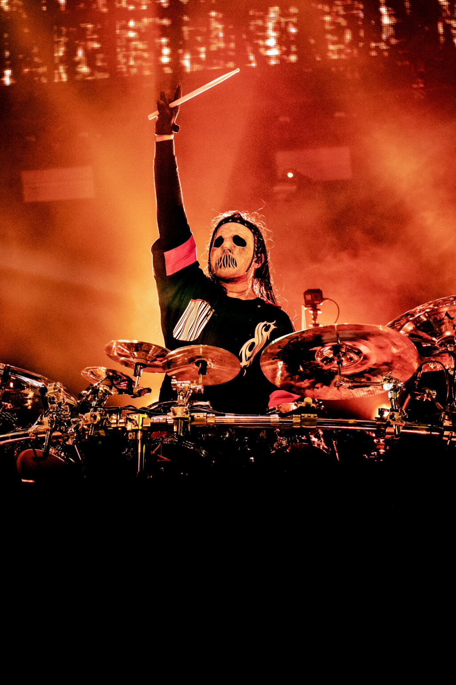
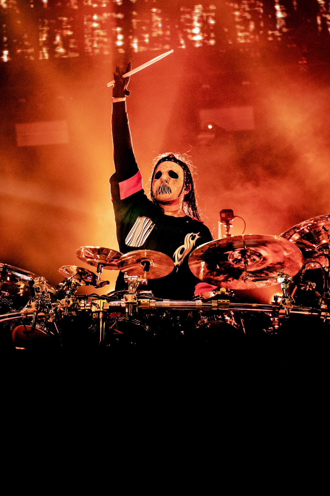
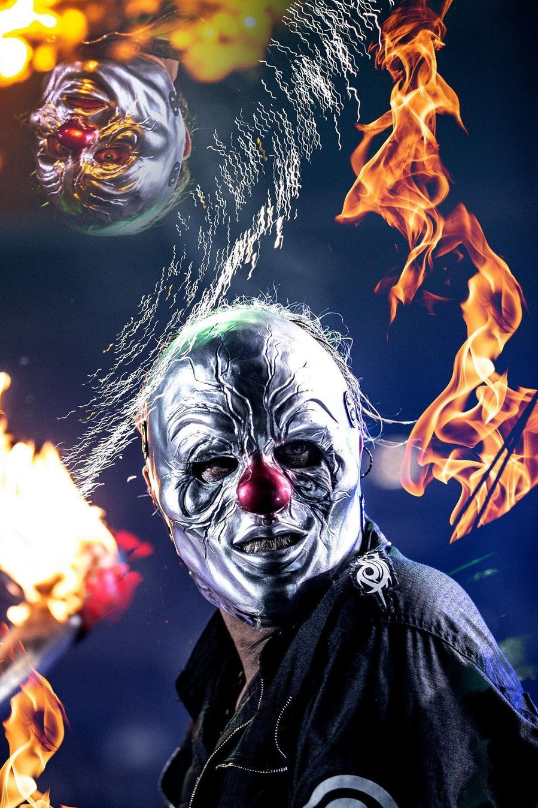
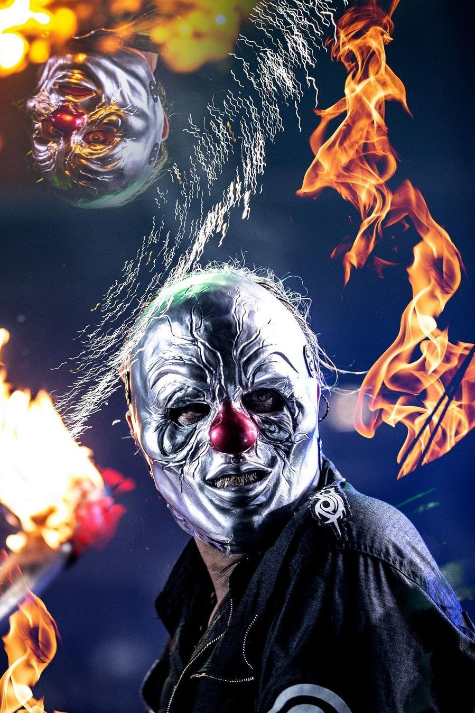

The end, so far...
Slipknot es una banda de metal alternativo y nu metal originaria de Des Moines, Iowa, formada en 1995. La banda se destaca por su sonido agresivo, sus letras introspectivas y su imagen distintiva, caracterizada por máscaras y trajes elaborados. Su música a menudo explora temas como la alienación, la ira, la introspección y el dolor emocional.
La formación original de Slipknot incluía a nueve miembros: Shawn "Clown" Crahan, Joey Jordison, Paul Gray, Chris Fehn, James Root, Craig Jones, Sid Wilson, Mick Thomson y Corey Taylor. A lo largo de los años, la alineación ha experimentado algunos cambios, con la partida y llegada de miembros, pero el núcleo creativo y emocional ha permanecido sólido.
Su álbum debut homónimo, "Slipknot", lanzado en 1999, introdujo al mundo su sonido distintivo y su enfoque visual único. Canciones como "Wait and Bleed" y "Spit It Out" se convirtieron en himnos del metal moderno, mientras que su energético y caótico espectáculo en vivo cautivó a los fanáticos de la música en todo el mundo.
El segundo álbum de la banda, "Iowa" (2001), profundizó en la oscuridad y la intensidad de su música. Temas como "Disasterpiece" y "The Heretic Anthem" mostraron una faceta aún más agresiva y visceral de la banda. A pesar de su intensidad, el álbum recibió elogios de la crítica y solidificó la posición de Slipknot como una fuerza importante en el mundo del metal.
Con el paso de los años, Slipknot ha seguido evolucionando y explorando nuevos sonidos y temáticas. Álbumes como "Vol. 3: (The Subliminal Verses)" (2004) y "All Hope Is Gone" (2008) ampliaron los horizontes musicales de la banda, incorporando elementos de rock alternativo y metal progresivo.
Trágicamente, en 2010, Paul Gray, el bajista y uno de los miembros fundadores de la banda, falleció debido a una sobredosis de drogas. Su muerte dejó un vacío en el corazón de la banda y en la comunidad de fans, pero Slipknot perseveró, lanzando su quinto álbum de estudio, "5: The Gray Chapter" en 2014, como tributo a su amigo y compañero.
El legado de Slipknot trasciende la música. La banda ha influenciado a generaciones de músicos y ha dejado una marca indeleble en la cultura del metal. Su energía en el escenario y su compromiso con la autenticidad y la expresión emocional han ganado el respeto y la admiración de millones de seguidores en todo el mundo. A lo largo de los años, Slipknot ha demostrado ser mucho más que una banda de metal; son una fuerza creativa y emocional que continúa desafiando fronteras y rompiendo barreras.
Sus miembros
Sid Wilson
Sid Wilson es reconocido como el DJ de Slipknot, aportando una dimensión única al sonido de la banda. Nacido el 20 de marzo de 1977 en Des Moines, Iowa, Wilson se unió a Slipknot en 1998, poco antes del lanzamiento de su álbum debut homónimo. Sus contribuciones como DJ y artista visual han enriquecido la identidad sonora y estética de la banda. Conocido por su energía en el escenario y su habilidad para fusionar elementos electrónicos con el metal, Sid Wilson ha sido una pieza integral en la evolución y el éxito continuo de Slipknot a lo largo de los años.
Jay Weinberg
Sid Wilson es reconocido como el DJ de Slipknot, aportando una dimensión única al sonido de la banda. Nacido el 20 de marzo de 1977 en Des Moines, Iowa, Wilson se unió a Slipknot en 1998, poco antes del lanzamiento de su álbum debut homónimo. Sus contribuciones como DJ y artista visual han enriquecido la identidad sonora y estética de la banda. Conocido por su energía en el escenario y su habilidad para fusionar elementos electrónicos con el metal, Sid Wilson ha sido una pieza integral en la evolución y el éxito continuo de Slipknot a lo largo de los años.
Alessandro Venturella
texto
Michael Pfaff
texto
Jim Root
texto
Craig Jones
texto
Shawn Crahan
texto
Mick Thomson
texto
Corey Taylor
texto
 



 
